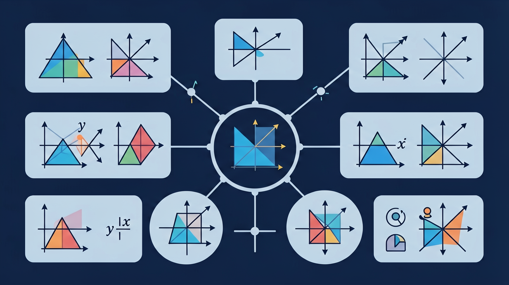

❓ 平移就是移动图形吗？方向和距离怎么控制？
❓ 位似图形为啥要有个中心点？放大缩小和拍照有啥关系？
❓ 平移和位似能一起用吗？比如做地图缩放时？
学完这一课，这些问题你都能自信地回答。
🎯 能说出平移的三要素（方向、距离、对应点连线平行）
🎯 能判断两个图形是否位似并找出位似中心
🎯 能分析平移与位似在组合应用时的图形变化规律

1. 将点A(2, 3)向右平移4个单位，再向下平移1个单位，得到的点坐标是？
2. 下列说法正确的是？
3. 已知△ABC与△A'B'C'相似，相似比为1:3，若△ABC面积为4，则△A'B'C'面积为？
地图导航中，你把手机地图拖动了一下——And（而且）地图上所有的标记都跟着移动了同样的距离和方向；But（但是）你发现城市之间的相对位置没有变；Therefore（因此）这就是数学中的"平移"：整体移动，形状不变！
将三角形三个顶点A(1,2)、B(3,2)、C(2,4)同时向左平移3，向上平移2，B点新坐标是？
你用手机相机对焦时，画面中的物体被放大——And你发现放大后图形与原图形形状完全相同；But大小按比例变化，且所有对应点连线都交于一点（镜头中心）；Therefore这就是位似变换：从"位似中心"出发，按同一比例缩放所有点！
以原点O为位似中心，位似比k=3，将点P(2, -1)变换后得到P'，P'坐标为？
位似比k=2时，原图形面积S=5，位似后图形面积S'=？
| 特征 | 平移 | 位似 |
|---|---|---|
| 大小 | 不变（全等） | 按比例缩放 |
| 形状 | 不变 | 不变（相似） |
| 方向 | 不变 | k>0同向，k<0反向 |
| 面积比 | 1:1 | 1:k² |
判断：以原点为位似中心，位似比k=-2，变换后图形在原图形的对面（关于原点对称一侧）。
某城市规划图上，学校S的坐标为(4, 6)，公园P为(8, 2)，图书馆L为(6, 10)。
1. 点P(-3, 4)向右平移5个单位，向下平移6个单位，得P'的坐标为？
2. 以A(1, 2)为位似中心，位似比k=3，将点B(3, 4)变换为B'，B'坐标为？
3. △ABC经位似变换（k=4）得△A'B'C'，若△ABC周长为6，则△A'B'C'周长为？
4. 位似比k=-1的位似变换等价于哪种变换？
位似变换的迭代应用——谢尔宾斯基三角形、科赫雪花的数学原理
地图的缩放原理与坐标变换在地理信息系统中的应用
荷兰画家埃舍尔的无限镶嵌图案中的位似与变换
游戏和动画中的仿射变换：平移+缩放+旋转的矩阵表示
位似变换是指图形按一定比例放大或缩小，且所有对应点连线交于同一点（位似中心）的变换。位似比k表示放大或缩小的倍数：当|k|>1时为放大，0<|k|<1时为缩小，k<0时图形还发生翻转。生活中，照相机的变焦、地图的比例缩放都是位似的例子。数学上，以原点O为位似中心，位似比为2的变换将点(x,y)变为(2x,2y)。位似保持图形的形状不变，只改变大小和位置。
先独立作答，再点选项查看对错与错因。
将点(4,6)先向右平移3个单位，再以原点为位似中心放大2倍，得到的坐标是
关于位似图形的性质，下列说法正确的是
把△ABC各边放大到原来的3倍得到△A'B'C'，若AB=5cm，则A'B'的长度为
将点(2,4)以点(1,1)为位似中心放大2倍后得到____
答案：(3,7)
根据位似公式(x',y')=(k(x-a)+a, k(y-b)+b)计算
图形先向左平移5个单位，再以y轴为对称轴反射，相当于对原图形先____后平移
答案：反射
变换顺序影响最终结果
关于平移与位似的关系，正确的是
根据比例尺1:500的旧图纸，制作放大1.2倍且整体平移的新导航图
平移拆解为方向箭头+距离刻度，位似拆解为放射线+比例尺
平移像推箱子，位似像投影仪放大幻灯片
平移保持形状大小，位似保持形状改变大小
观察推拉门轨道（平移）和相机变焦时景物（位似）
用平移+位似组合设计景区导览图的缩放功能
✅ 用三角板验证对应点连线是否平行
💡 混淆平移与旋转的刚性变换特性
✅ 测量对应边比值是否相同
💡 忽视位似图形的比例因子
口诀：平移三要素记心头，方向距离平行走；位似必有中心点，放大缩小像光点
类比：平移像电梯上下直移动，位似像路灯下影子变大变小
将△ABC向右平移3cm得到△DEF，则下列说法正确的是？
关于位似图形，错误的是？
（中考题）在方格纸中，将△ABC先向右平移4格，再以P点为位似中心放大2倍，则新图形与原图形的面积比是？
用平移+位似解释：为什么手机地图缩放时，道路长度变化但转弯角度不变？
设计公园地图时，若将喷泉区放大3倍且整体向东移5米，应该先进行？
And：学生已掌握平面图形的基本性质
But：不理解图形整体移动时各点坐标变化的规律
Therefore：建立平移与坐标变化的数量关系
平移是指图形在平面内保持形状大小不变的整体移动。关键要抓住对应点移动方向相同、距离相等。例如将△ABC向右平移3个单位，顶点A(1,2)变为A'(4,2)，所有点的纵坐标不变，横坐标加3。平移向量(3,0)可以精确描述这个变化过程。
🌍 电梯运行是典型平移现象：当电梯垂直上升时，轿厢内所有物体都保持相对位置不变，就像被同一个‘看不见的手’整体托起。
将点P(5,-1)向左平移2个单位后的坐标是？
And：学生理解图形放缩的概念
But：不清楚放缩中心与比例系数的关系
Therefore：掌握位似变换的数学表达
位似变换是通过固定点（位似中心）按比例放大或缩小图形。例如以原点O为位似中心，将△DEF放大2倍：若D(2,1)变为D'(4,2)，则所有新点坐标=原坐标×2。关键要抓住三点：1.对应点连线过位似中心 2.对应线段成比例 3.位似比k>1放大，0<k<1缩小。
🌍 投影仪成像就是位似变换：当调整投影距离时，屏幕上的图像会以镜头为位似中心同步放大或缩小，就像魔法师用放大咒语一样神奇。
以(0,0)为位似中心，将点Q(3,6)缩小为原来的1/3得到？
And：学生已分别掌握两种变换
But：容易混淆变换特征
Therefore：建立对比认知框架
平移和位似都是全等或相似变换，但有本质区别：1）平移保持图形全等，位似改变大小但保相似；2）平移有方向向量，位似有中心点和比例系数。例如把正方形平移后还是原大小，但以某点放大2倍后边长会加倍。特别注意：当位似比k=1时就是特殊的平移（无缩放）。
🌍 手机地图功能同时运用两种变换：手指拖动地图是平移，双指缩放时是以屏幕中心为位似中心的变换，这解释了为什么地标位置关系始终正确。
下列哪种变换会改变图形面积？
开放任务：用三步写出你如何向同学讲清「平移与位似」。